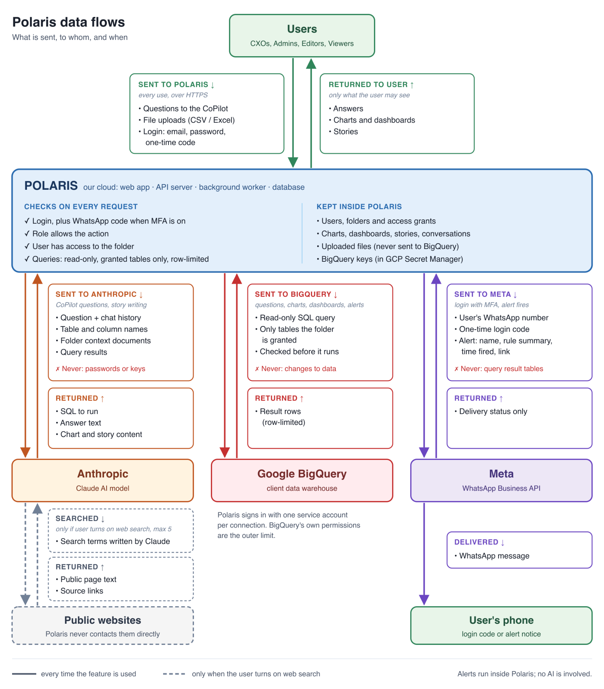

Everything you need to get answers out of Polaris, faster.
Polaris is an AI analytics platform for finance and business leaders. Ask a question about your company's financial and operational data in plain language, and get back answers as text, tables and charts — then turn those answers into dashboards, written reports and alerts. It works like a familiar AI chat assistant, with one difference: answers come from your own data, not the model's memory.
Start here
Getting started
Four steps from first login to your first answered question.
-
1
Sign in Use the activation link your admin emailed you to set a password, then sign in. If you don't have an account yet, ask your workspace Admin to invite you.
-
2
Check your folder access Polaris scopes data by folder. You'll only be able to query the warehouse data your Admin has granted to a folder you belong to — ask them if a dataset you expect to see is missing.
-
3
Open Explore and ask a question Type a question the way you'd ask a colleague — "What was revenue by region last quarter?" Polaris plans the query, runs it read-only against your warehouse, and answers with a chart or table plus its reasoning in the Tools Timeline.
-
4
Save, pin, and share what's useful Turn a good answer into a saved Chart, add it to a Dashboard, wire it to an Alert, or ask Polaris to narrate it into a Story — all from the same conversation.
What Polaris can do
Core capabilities
Two rules apply to every feature below: your role decides what you can do, and your data access (folders) decides which data you can see. Both always apply.
Data Connection
Bring in data from a data warehouse (BigQuery, Databricks, Snowflake, Amazon Redshift) or a CSV/XLSX file. Warehouse access is always read-only — Polaris can never change or delete source data.
Knowledge Base
Teach CoPilot the business and control who sees which data. Unit and formula documentation means CoPilot doesn't guess what a number means — it picks the right table and applies the same formula every time.
CoPilot
AI assistant: Q&A, competitive benchmark, forecast, file upload. Figures always come from a query on your data, never from the model's memory.
- "What was net profit for Jakarta Region in Q2 versus budget?"
- "How does our margin compare to industry benchmarks?"
Charts
See any figure as a chart, including custom chart types. A chart only draws what the query already returned — it never calculates or adjusts a value itself.
Dashboard
Keep charts and tables together in one view. If a dashboard includes a chart built on data you can't see, that chart simply isn't shown to you.
Story
Get a written, board-ready report built from charts or dashboards. A Story is a snapshot until refreshed — numbers don't change automatically when the underlying data does.
- "Turn the Q3 Board Dashboard into a Story"
Multi Agents
Choose a specialist AI agent to chat with, e.g. a Cash Flow Analyst. An agent works within the role and data access of whoever is chatting with it — never more than that user can see.
Alert
Get notified when a number crosses a threshold. Notifications are sent through WhatsApp as a link only — no company data is ever included in the message.
RBAC
Control who can see and do what, across four roles: Super Admin, Admin, Editor and Viewer. See the full breakdown in Roles & permissions.
See it in action
Feature tour
Nine building blocks. Each demo below recreates the actual screen and interaction from the product (not a generic mockup) — click a chip, a switch, or a button to see it move.
Data Connection
Bring in data from a data warehouse (BigQuery, Databricks, Snowflake, Amazon Redshift) or a CSV/XLSX file. This is the real Context ▸ Data schema tree — pick a provider to see it relabel.
Knowledge Base
Teach CoPilot the business and control who sees which data. This is the real Context ▸ Documents row — flip the switch to publish a draft.
CoPilot
The AI assistant: Q&A, competitive benchmark, forecast, file upload. This recreates a real Explore answer — pick a specialist, open the Tools Timeline, or tap a follow-up.
Q3 gross margin was 61.4%, about 4pts above the SaaS benchmark I pulled from your last board deck + public filings.
finance.margin_monthlyCharts
See any figure as a chart, including custom chart types. These are the real dashboard KPI tiles — click one to swap the chart below it, or switch chart type directly.
Dashboard
Keep charts and tables together in one view. This mirrors the real dashboard's tab bar — switch between Finance, Operations and People to swap the KPI grid underneath.
Story
Get a written, board-ready report built from charts or dashboards. Ask Polaris to revise it in chat and the whole narrative updates — not just one line.
Q3 Board Update
Revenue grew steadily this quarter, with margin holding firm despite modest headwinds in churn.
Multi Agents
Choose a specialist AI agent to chat with. This is the real AI Agents roster — each card lists its always-on and on-demand skills. A persona changes emphasis, never data access.
The workspace generalist — cross-BU, data-first, no opinion on strategy.
Reads the business as capital allocation, margin, cash and payback.
Looks for the signal behind the number — cohorts, funnels, retention.
Alert
Get notified when a number crosses a threshold. This is the real Alerts feed — severity-coded by colour, newest on top. Simulate a breach to see a new one arrive.
RBAC
Control who can see and do what. This mirrors the real User Management row — switch roles to see the pill and permissions change, exactly as they would for that person.
| View charts & dashboards | — |
| Create / edit charts | — |
| Manage users & connections | — |
| Configure billing & caps | — |
Get better answers
Writing good prompts
Polaris works best when you ask the way you'd brief a sharp analyst — specific, with the comparison and timeframe spelled out.
Name the metric and the timeframe
"Revenue" over "how are we doing", "last quarter vs the prior one" over "recently".
Ask for the comparison you actually want
By region, by segment, vs. target, vs. last year — Polaris will pick a reasonable default if you don't, but naming it gets you the right chart faster.
Iterate in the same thread
"Now break that down by product line" reuses everything Polaris already resolved — the folder, the metric, the filters — instead of starting over.
Check the Tools Timeline
Every answer shows the SQL Polaris ran and the schema it searched. If an answer looks off, that's the first place to look — and to correct it ("use the finance table, not the ops one").
Who can do what
Roles & permissions
RBAC decides what each person can do. Every request is checked against two layers, and both always apply: your role decides what you can do; your data access (folders) decides which data you can see. A role never grants data access by itself, and data access never grants extra abilities.
Super Admin
Held by the Polaris product team (SQE), not the client. Manages users and billing only. No access to client data.
Admin
Full access to all features within their folders, including user management and giving users access to folders.
Editor
Can create and edit content, and create folders and move data tables within their folders. No user management, no changes to user access.
Viewer
Can view and chat with CoPilot. Cannot create, edit or delete anything.
| Feature | Super Admin | Admin | Editor | Viewer |
|---|---|---|---|---|
| Data Connection | No access | Create, edit, view | Create, edit, view | No access |
| Knowledge Base: unit & formula docs | No access | Create, edit, view | Create, edit, view | Used by CoPilot, not shown |
| Knowledge Base: user access to folders | No access | Edit, view | No access | No access |
| Folders & data tables (create, move) | No access | Create, edit, view | Create, edit, view | View only |
| CoPilot (Q&A, Benchmark, Forecast) | No access | Full | Full | Ask questions only |
| Charts | No access | Create, edit, view | Create, edit, view | View only |
| Dashboard | No access | Create, edit, view | Create, edit, view | View only |
| Story | No access | Create, edit, view | Create, edit, view | View only |
| Multi Agents | No access | Create, edit, use | Create, edit, use | Use only |
| Alert | No access | Create, edit, view | Create, edit, view | View only |
| User Management | Create, edit, view | Create, edit, view | No access | No access |
| Billing | Edit, view | View only | View only | View only |
Admins, Editors and Viewers see and work only in the folders they've been given access to. Billing shows credit calculation only — never questions, answers or figures.
Chapter 3 · Data & feature access control
Access & governance
Who can use Polaris, which data each user can see, and how those limits are applied — enforced by Polaris on the server, for every request.
Access principles
- 1Need to knowA user gets only the features and data their work requires.
- 2Unit isolation by defaultEach unit — department, branch or subsidiary — is a folder. A user sees only the folders an Admin has given them.
- 3Access follows the folder treeAccess to a folder includes everything inside it, including child folders.
- 4Queries are limited to the user's dataAn answer, chart or report can never include data from folders the user has no access to.
- 5The vendor role has no data accessThe Super Admin role, held by the SQE team, has no access to client data.
The folder tree
Access is inherited downward only. Access to a child folder never grants access to its parent or to a sibling folder.
- 🏢 Head Office
- 🏬 Finance Department
- 🏬 Technology Subsidiary
- 🏬 Jakarta Region
- 📍 Sudirman Branch
- 📍 Kelapa Gading Branch
- 🏬 Surabaya Region
- 📍 Tunjungan Branch
| If the user has access to | The user can see |
|---|---|
| Head Office | All departments, regions, branches and subsidiaries, plus Consolidated Data |
| Jakarta Region | Jakarta Region, including Sudirman and Kelapa Gading branches. Nothing in Surabaya Region |
| Sudirman Branch | Only Sudirman Branch |
| Technology Subsidiary | Only the subsidiary's folders and data. Nothing in Head Office, the other units, or Consolidated Data |
Managing folders and access
| Action | Who can do it |
|---|---|
| Give or remove a user's access to a folder | Admin only |
| Create a folder or sub-folder | Admin and Editor |
| Move a data table to another folder | Admin and Editor |
| View folders | All roles, limited to folders the user has access to |
How access is applied
| Situation | What Polaris does |
|---|---|
| A user asks about data in a folder they cannot access | Polaris blocks the query on the server. CoPilot tells the user they don't have access and directs them to their administrator |
| A dashboard contains a chart built on data the user cannot see | That chart is not shown to the user |
| A user refreshes a Story | The refresh uses the access of the user who runs it |
| A question needs public information from the web | Public information is available to all roles — the search receives only the query text, never tables, results or files |
| A user uploads a file in a chat | Not checked against data access rules, since the user supplies it. Used only in that chat session |
Provisioning & review responsibility
| Activity | Responsibility |
|---|---|
| Approving access requests, and keeping the record of approval | Client, usually by email |
| Reviewing who has access, and removing access no longer needed | Client |
Polaris provides the controls — roles, the folder tree and User Management. It does not include an approval workflow, a scheduled access review, or a record of access changes; these stay the client's responsibility.
Chapter 4 · High-level architecture & third-party interaction
Architecture & data handling
Where Polaris runs, where data is stored and processed, and which third parties are involved.
| Part | What it does | Where it runs |
|---|---|---|
| Polaris application | The web app and the logic behind it: users, roles, folders, CoPilot, charts, dashboards, Stories, alerts | Google Cloud Platform, in the client's or SQE's environment |
| Data warehouse | Google BigQuery for this deployment (Databricks, Snowflake, Redshift also supported). Read-only access | BigQuery: GCP, Indonesia. Other warehouses: client's environment |
| Anthropic Claude API | The AI models behind CoPilot, and web search | Anthropic — SG / JP or any region where Anthropic operates |
| AI models in trial | Models that can be hosted in Indonesia (Qwen, DeepSeek, Gemma). Under evaluation, not connected to client data | Separate test environment |
| WhatsApp messaging | Delivers alert links, sent directly to Meta | Meta |

Where data is stored and processed
| Data | Where it is stored or processed | Location |
|---|---|---|
| Company data in the data warehouse | Google BigQuery, for this deployment | Indonesia |
| CSV/XLSX files uploaded through Data Connection | Deployment location | Indonesia |
| Polaris application data (users, roles, folders, charts, dashboards, Stories, conversations) | Polaris application database on GCP | Indonesia |
| Content sent to the AI model while it answers | Anthropic Claude API | SG / JP or any region where Anthropic operates |
| Local models (still in trial, not yet in production) | Separate test environment | Indonesia |
Anthropic features used, and their ZDR status
| Anthropic feature | Used by Polaris | ZDR status |
|---|---|---|
| Messages API (questions, answers, tool calls) | Yes | Covered |
| Prompt caching | Yes | Covered — held in memory only, 5-minute lifetime |
| Web search | Yes | Covered |
| Files uploaded in a chat session (Files API) | Yes | Not covered — kept until deleted or expired |
| Batch processing, code execution, MCP connector, Agent Skills, Managed Agents | No | Not used by Polaris |
Masking personal data at the source
Clients can mask or exclude PII before it reaches Polaris, using the data source's own controls — column-level policy tags, dynamic data masking, or authorized views on the service account Polaris uses. Polaris does not mask uploaded CSV/XLSX content — remove or mask PII there before upload.
Models in trial In trial
SQE is trialling open-weight models that can be hosted in Indonesia — Qwen (Alibaba), DeepSeek, and Gemma (Google). The trial runs in a separate staging environment on SQE's internal data only — no client or production data. SQE will notify clients in writing, and update this documentation, before any trial model touches client data.
Web search
Used for competitive benchmarks: CoPilot decides a question needs public context, Claude writes a search query from your business context, Anthropic runs the search and returns results, and Claude writes the answer with cited sources. Switched on by your organization's administrator in the Anthropic console. The basic web search tool is covered by ZDR — Anthropic does not store the request or results after the response returns.
Encryption
| Where | Standard |
|---|---|
| User browser to Polaris | HTTPS only (TLS) |
| Polaris to Anthropic | TLS 1.2 or higher |
| Inside Anthropic, at rest | AES-256 disk encryption — applies to Files API uploads and anything retained under the ZDR exceptions |
| Polaris database and uploaded files at rest | AES-256, Google Cloud's default encryption at rest |
Third parties & sub-processors
| Third party | Purpose | Data shared | Location |
|---|---|---|---|
| Anthropic | AI models and web search | Prompts needed to answer questions; for web search, only the query text. Not stored after the response (ZDR), except chat-session file uploads (Files API, outside ZDR) | Outside Indonesia, any Anthropic region |
| Google Cloud Platform | Hosts the Polaris application and the BigQuery warehouse | Company data and Polaris application data | Indonesia |
| Meta (WhatsApp) | Sends alert links, directly | Recipient phone number and a link — no company data | Indonesia (requests may transit non-Indonesian servers for up to 60 minutes) |
Provider assurance: Anthropic holds ISO 27001:2022, ISO/IEC 42001:2023 (AI management), SOC 2 Type I and Type II, and a HIPAA-ready configuration. These certify Anthropic's own controls and do not replace Polaris's — Anthropic provides its compliance documents on request through its Trust Portal.
Common questions
FAQ
Does Polaris ever write to my data warehouse?
No. Data warehouse connections are read-only — Polaris can read connected tables but cannot change or delete data in the warehouse. It can only create or edit objects inside Polaris itself: charts, dashboards, alerts, Stories and the Knowledge Base.
Why can't I see a dataset I know exists?
Data access is folder-scoped, and access only flows downward — a folder you're assigned to, plus everything inside it. Access never passes upward or sideways, so being inside one branch's folder tells you nothing about a sibling branch. Ask your Admin to grant you the right folder.
Can Polaris search the public internet?
Yes, for competitive benchmarks — switched on by your organization's administrator in the Anthropic console. Only public information is used, it never replaces your own figures, and every answer cites its sources with links.
What happens when I refresh a Story?
A Story is a snapshot until refreshed — its numbers don't update automatically when the underlying data changes. Refreshing re-fetches the latest data and regenerates the Story's charts, numbers and analysis, using the access of whoever runs the refresh. Hand-edited text is overwritten by a refresh, and earlier versions aren't kept — export a copy first if you need the record.
Is it safe to upload a file to CoPilot in a chat?
Chat uploads are meant for public or competitor material — an annual report, an industry study, a screenshot to imitate. They're used only within that chat session, aren't checked against your data access (since you supplied the file), and are stored with Anthropic through its Files API, which sits outside the zero-data-retention agreement. Sensitive company data should go through Data Connection instead, where it stays governed by folder access.
Terms
Glossary
- Polaris
- The AI analytics platform described in this playbook.
- CoPilot
- The AI assistant inside Polaris that answers questions and creates charts, dashboards, Stories, alerts and agents.
- Agent
- A specialist AI assistant, created inside CoPilot, that a user chooses to chat with.
- Story
- A written report built from charts or dashboards.
- Knowledge Base
- Business and formula documents that CoPilot reads, plus the folders that control data access.
- Folder
- A container that holds data tables, charts, dashboards and Stories. Folders sit in a tree and control who can see what is inside them.
- Claude
- The family of AI models from Anthropic that powers CoPilot.
- Unit
- A part of the organisation whose data is held in Polaris — a department, region, branch or subsidiary. Each unit is a folder.
- BigQuery (BQ)
- Google's cloud data warehouse, where Polaris data is stored and queried.
- RBAC
- Role-Based Access Control. Decides what each user can do.
- Super Admin
- A role held by the SQE Team that manages users and billing only, with no access to client data.
- Consolidated Data
- Figures and KPIs that combine all units. Stored in the Head Office folder.
- SQE Team
- The product and engineering team that builds and operates Polaris.